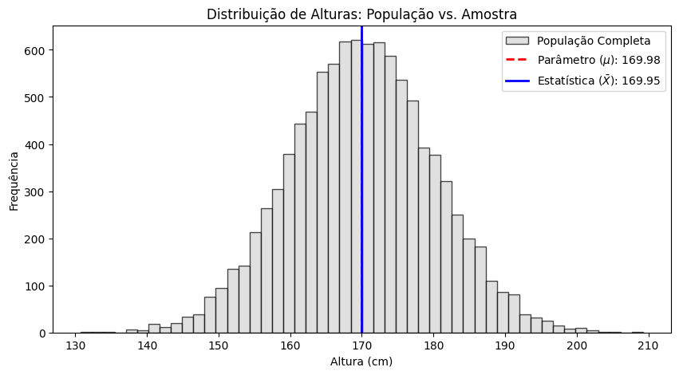

Visualizar código
import numpy as np
import matplotlib.pyplot as plt
# 1. CRIANDO A NOSSA POPULAÇÃO (O mundo real e desconhecido)
np.random.seed(42) #Essa linha fixa a aleatoriadade da população ao trava com parâmetro 42, para tornar a população aleatória a cada execução, remover...
populacao = np.random.normal(loc=170, scale=10, size=10000) #parâmetros fictícios adotados aplicados a uma distribuição normal, podem ser alterados para visualização
# Calculando o PARÂMETRO (A média real de toda a população)
parametro_mu = populacao.mean()
# 2. COLETANDO UMA AMOSTRA (O trabalho do pesquisador)
np.random.seed(None) # amostra aleatória, pois parâmetro "none" não trava
tamanho_amostra = 50 # Mude este número para ver o erro de estimação aumentar ou diminuir
amostra = np.random.choice(populacao, size=tamanho_amostra, replace=False)
# Calculando a ESTATÍSTICA (A média estimada a partir da amostra)
estatistica_x_barra = amostra.mean()
# 3. VISUALIZANDO OS RESULTADOS
print(f"--- RESULTADOS DO EXPERIMENTO ---")
print(f"Parâmetro (Média da População - 10.000 pessoas): {parametro_mu:.2f} cm")
print(f"Estatística (Média da Amostra - {tamanho_amostra} pessoas): {estatistica_x_barra:.2f} cm")
print(f"Erro de Estimação (A diferença entre eles): {abs(parametro_mu - estatistica_x_barra):.2f} cm\n")
# Gerando um gráfico para ilustrar
plt.figure(figsize=(10, 5))
plt.hist(populacao, bins=50, color='lightgray', edgecolor='black', alpha=0.7, label='População Completa')
plt.axvline(parametro_mu, color='red', linestyle='dashed', linewidth=2, label=rf'Parâmetro ($\mu$): {parametro_mu:.2f}')
plt.axvline(estatistica_x_barra, color='blue', linestyle='solid', linewidth=2, label=rf'Estatística ($\bar{{X}}$): {estatistica_x_barra:.2f}')
plt.title('Distribuição de Alturas: População vs. Amostra')
plt.xlabel('Altura (cm)')
plt.ylabel('Frequência')
plt.legend()
plt.show()--- RESULTADOS DO EXPERIMENTO ---
Parâmetro (Média da População - 10.000 pessoas): 169.98 cm
Estatística (Média da Amostra - 50 pessoas): 169.95 cm
Erro de Estimação (A diferença entre eles): 0.03 cm
